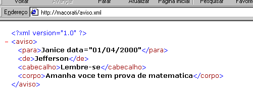

Questão 1:Acesse um domínio, informe o endereço acessado e qual o seu endereço ipv4.
Ferramenta de Dev do Google F12
Network – header
1. Request URL: www.cursoemvideo.com/login/
2. Remote Address: 104.21.25.49:443
Questão 2:Descubra e exiba o endereço ipv6 de um domínio com a ferramenta nslookup
Pela ferramenta online nslookup
nslookup pelo CMD – google.com

nslookup pelo site – youtube
Questão 3:Descubra e exiba o endereço da sua placa de rede utilizada para acessar a internet, o gateway e o DNS utilizado.
Ipconfig /all
Questão 4:Utilize a ferramenta WHOIS para obter as informações de um domínio.
Utilize a ferramenta WHOIS para obter as informações de um domínio
Questão 5: Quais são as portas utilizadas normalmente para envio (SMTP) e recebimento de e-mails (POP3 e IMAP) padrões utilizados na internet?
Porta SMTP 25 é a porta padrão para envio de mensagens usando o servidor de e-mail SMTP.
Por exemplo, pode ser usada tanto para conexões sem segurança, como para conexões TLS/SSL.
Porta SMTP 587 é a porta utilizada como alternativa a porta 25. Muitos provedores possuem a porta 25
bloqueada por segurança.
Porta SMTP 465 também é uma porta utilizada por servidores SMTP atualmente.
Por padrão, a porta POP3 é:
Porta 995 – Porta SSL / TLS, também conhecida como POP3S.
Portas SMTP:
465 – Porta SSL, também conhecidas como SMTPS
587 – Porta TLS, também conhecida como SMTP TLS
Questão 6:Exiba as informações de análise de PING e Traceroute para um domínio.
Questão 7:Acesse um serviço de web service e exiba o conteúdo. Este conteúdo é em qual formato (XML/JSON)?
Esse é um exemplo em Json, pois possui uma estrutura entre colchetes e chaves.
Se a ideia é criar aplicações leves, rápidas, sem muitas exigências (como é geralmente o caso na web) e, principalmente, o JavaScript faz parte do dia a dia, o JSON deve facilitar muito seu trabalho.
Além disso, com o aumento no número de web designers aprendendo a linguagem para fazer mágicas em seus
trabalhos, JSON acaba mais aceito por ter inicialmente melhor legibilidade.
Este é um exemplo em XML.
Por outro lado, se o sistema exige uma maior complexidade de dados, com direito a uma padronização madura na validação dos mesmos e transformações frequentes, XML pode ser a melhor pedida.
Se eles precisam de uma categorização, identificação ou classificação, os metadados são mais que indicados, sem dúvidas.
